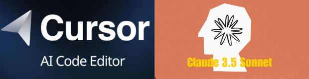
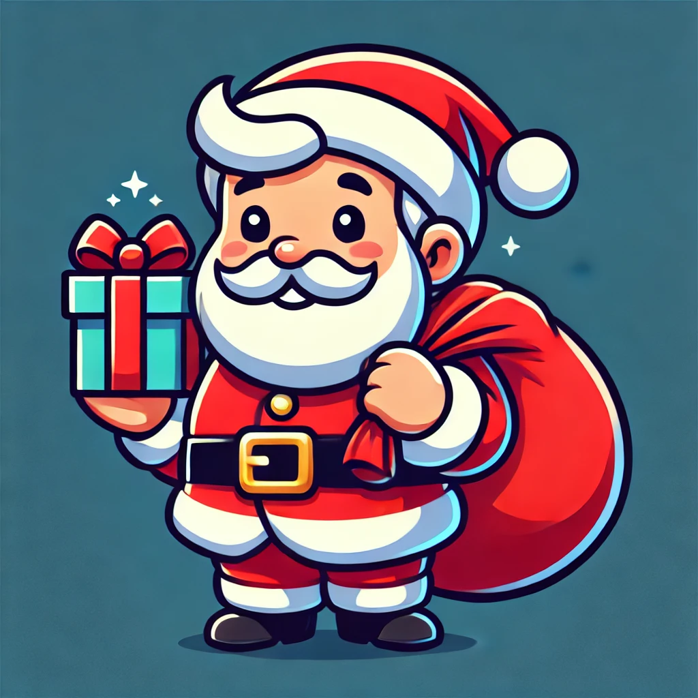

Come è Stato Sviluppato
ChatGPT 4.0
Utilizzato per l'elaborazione iniziale dei prompt e la pianificazione del progetto
Stackblitz Bolt
Impiegato per la strutturazione iniziale del progetto e l'organizzazione delle directory

Cursor + Claude 3.5 Sonnet
Utilizzato attraverso Cursor per le modifiche al gioco e lo sviluppo del sito di presentazione
Caratteristiche del Gioco
🛷
Slitte Personalizzabili
Scegli tra tre diverse slitte magiche, ognuna con caratteristiche uniche
🎁
Sistema di Power-up
Raccogli bonus per aumentare velocità e potenza di sparo
❄️
Effetti Particellari
Neve dinamica e effetti visivi realizzati con Canvas
🎯
Sistema di Collisioni
Meccanica di gioco precisa con rilevamento collisioni avanzato
Dettagli Tecnici
Tecnologie Utilizzate
- HTML5 Canvas
- JavaScript ES6+
- Vite.js
- SVG per gli Assets
Pattern Architetturali
- Game Loop Pattern
- Entity Component System
- State Management
- Object Pooling

Caratteristiche Implementate
- Sistema di selezione slitte personalizzate
- Power-up e bonus speciali
- Design natalizio responsivo
- Architettura modulare e scalabile